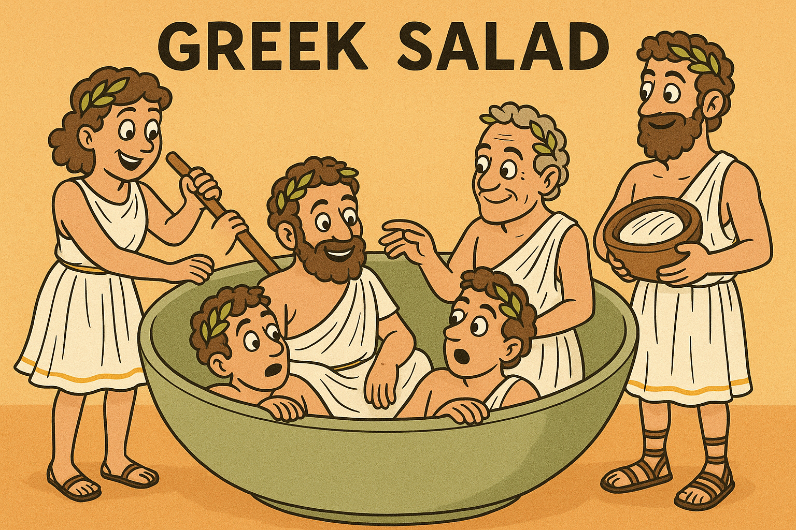

→ Home ←
Greek Salad
Serves 3-6 people, 20-30 min preparation time, 0 min cooking time

Description
A delicious salad filled with refreshing vegetables and salty fetta. The perfect side dish for any occasion!
Ingredients
- 1 block greek fetta
- 2 cucumbers
- 1/4 cup of green capsicum
- 1/2 red onion
- 1 gourmet tomato
- 1 teaspoon oregano
- 1/4 cup red wine vinigar
- 1/4 cup olive oil
Steps
- First Slice the cucumbers, fetta, capsicum, tomato, and red onion.
- Put all the things you sliced into a big salad bowl.
- Pour the red wine vinigar and olive oil over the vegetables.
- Mix the vegetables thoroughly.
- Season with oregano then serve.